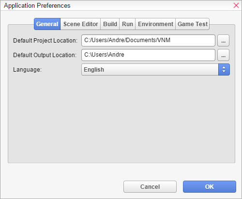

Application Preferences
Visual Novel Maker allows you to change several application preferences. You can open Application Preferences throughThe Menu Bar.

General
Default Project Location- Allows you to set a default location on where the files will be saved whenever you make a new project.
Default Output Location- Allows you to set a default location on where the files will be saved whenever you create a game package.
Language- Allows you to change the language of the program.
Scene Editor
Scene-Command Size- Changes the font size of the scene commands to either Small or Large.
Use Original Size in Preview- If checked, this adjusts the preview windows in the scene commands to display the current resolution of your project. Otherwise preview windows are only half the size of the game's resolution which is useful for smaller screen resolutions.
Disable Live-Preview- If checked, it will disable the live preview in Scene Content.
Disable Live-Preview Music- If checked, it will disable any music playback in live preview.
Disable Live-Preview Sound- If checked, it will disable any sound playback in live preview.
Disable Live-Preview Voice- If checked, it will disable any voice playback in live preview.
Disable Live-Preview Animations- If checked, it will disable animations in Live Preview. This is useful to avoid high CPU usage if you experience it.
Disable Auto-Replay- If checked, Live Preview will no longer automatically refresh if you click on a command or change a field. You have to refresh it manually with CTRL+R on Windows and CMD+R on Mac.
Stop Live-Preview Animations after X seconds- After a set amount of time, it will pause live preview animations for that scene. This is useful to avoid high CPU usage if you experience it.
Build
Setup build configurations here. For more information, seeBuild & Run.
Run
Setup run configurations here. For more information, seeBuild & Run.
Environment
Setup environment variables here. For more information, seeBuild & Run.
Game Test
Setup game test settings here. For more information, seeBuild & Run.